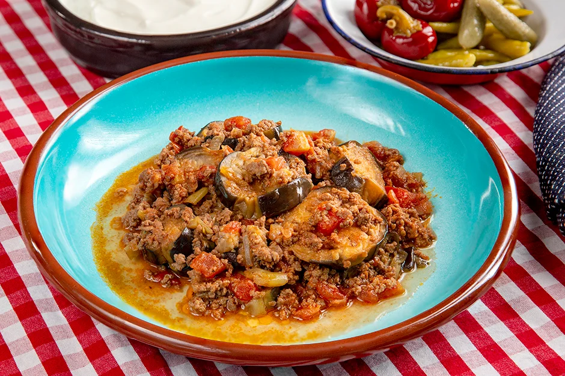

Patlıcan Musakka

Tarifin hikayesi
2-4 Kişilik | 20dk Hazırlık | 15dk Pişirme
Patlıcanın lezzetini sevmeyen çok az kişi vardır heralde dünyada. Bu yüzden patlıcanı hayatımızın her alanına sokmuşuzdur. Mezesi, yemeği, salatası, turşusu her çeşidini yaparız. Bu tariflerden bir taneside patlıcan musakka yemeğidir. Hem sağlıklı oluyum hem karnım doysun diyenlerdenseniz bu tarif tm size göre. Musakka yapımının en lezzetlisi desem fazla abartmış olmam sanırım. Pratikliği ve lezzetiyle gönlünüzü alacak, masalarınızı tatlandıracak patlıcan musakka yemeğini denemenizi şiddetle tavsiye ederim. Deneyeceklere şimdiden afiyet olsun.
Patlıcan Musakka Yapılışı Tarifi İçin Malzemeler
- 4 adet orta boy patlıcan
- 350g kıyma
- 3 adet çarliston biber ya da köy biberi
- 2 adet domates (rendelenmiş ya da küçük doğranmış)
- 1 adet orta boy soğan
- 1 su bardağı sıcak su
- 2 diş sarımsak
- 3 yemek kaşığı zeytinyağı
- Tuz, karabiber, pul biber, kimyon
- 1 yemek kaşığı salça
- 1 çay bardağı sıcak su
Patlıcan Musakka Yapılışı Tarifi Nasıl Yapılır?
- İlk olarak patlıcanları alacalı soyup yuvarlak dilimleyin
- Tuzlu suda en az yarım saat bekletin.
- Daha sonra kurulayıp kızgın yağda hafif kızartın.
- Patlıcanlar kızardıktan sonra yağını çekmesi için havlu peçete üzerine çıkartın.
- Uygun bir tavaya sıvı yağı ve kıymayı koyarak kavurun.
- Biraz kavrulduktan sonra sonra küçük doğranmış soğanı, biberi ekleyip kavurmaya devam edin.
- Daha sonra doğranmış sarımsağı, domatesi, salçayı ve dilediğiniz baharatları ekleyin.
- Domates suyunu çekince 1 çay bardağı sıcak suyu ekleyip suyunu çekene kadar pişirin.
- Tencerenin dibine patlıcanları dizip, üzerine kıymalı karışımı dökün.
- 1 su bardağı sıcak su ekleyip orta ateşte yaklaşık 15 dakika kadar pişirin.
- Özleşmesi için biraz dinlendirip servis yapabilirsiniz. Deneyeceklere afiyet olsun.